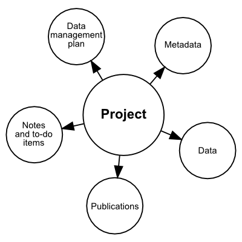
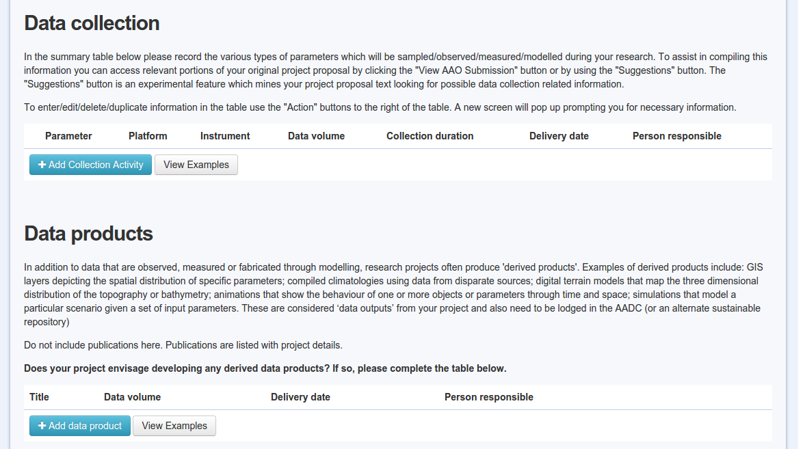
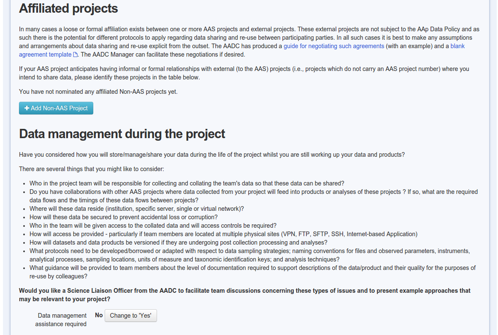
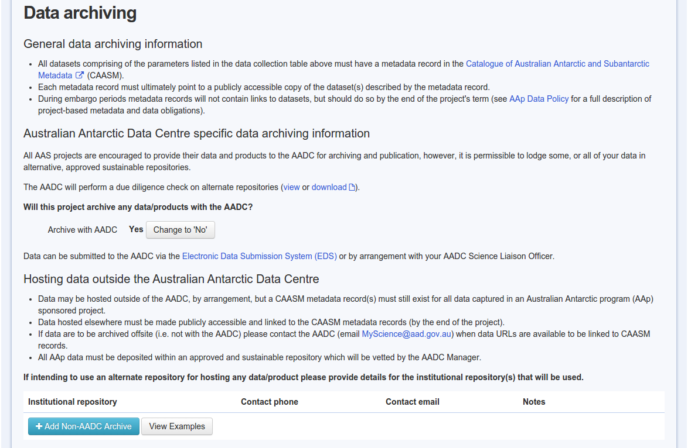
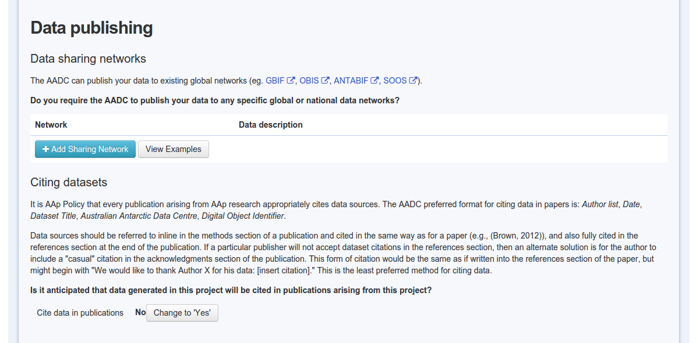
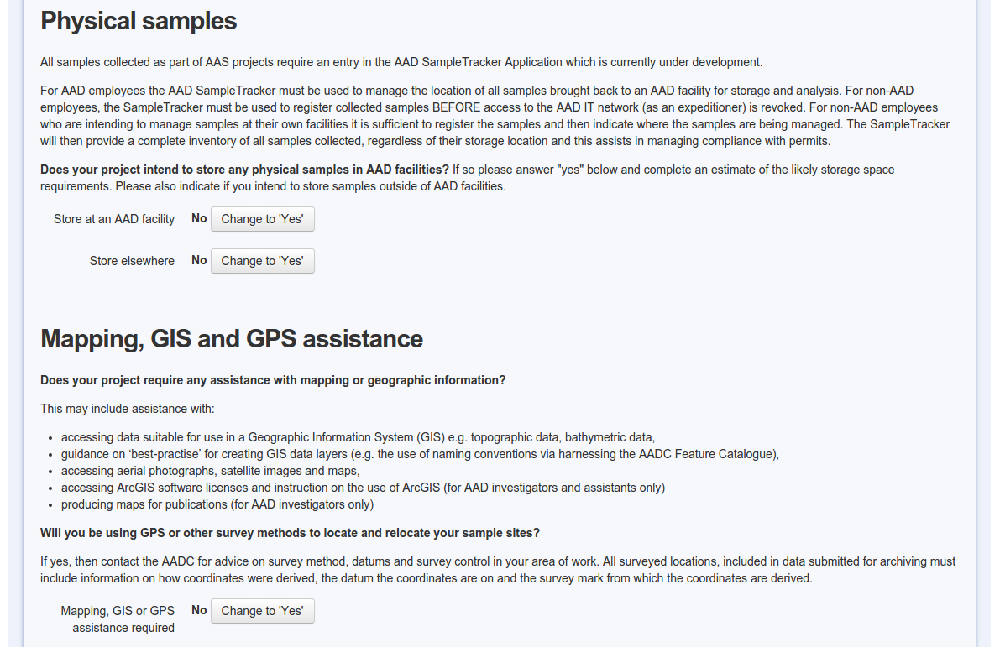

The Australian Antarctic Data Centre
ben.raymond@aad.gov.au
AADC background
- established in 1996 to provide long-term management of Australia's Antarctic data
- Australia's National Antarctic Data Centre
- motivations: Treaty obligations and desire for good science
- national and international
- roles: compliance and participation in science
Project management

Data policy
http://data.aad.gov.au/aadc/about/data_policy.cfm
- data are owned by the Commonwealth
- PI has exclusive use before data are made public
- data products are owned by their creator
- project products are also made public
Data management plans
http://data.aad.gov.au/aadc/projects/
first milestone: what data, when?
flags for:
- project links
- data management responsibilities
- data archiving and publishing
- DOIs
- AADC assistance
Data management plans

Data management plans

Data management plans

Data management plans

Data management plans

MyScience
http://data.aad.gov.au/aadc/projects/
- project liaison officer
- annotations
- publications
- reporting of outputs
Data management
data are:
- discoverable via metadata catalogue
- preserved
- published to appropriate networks
- curated and value-added
Data DOI
- digital identifier on a dataset
- citations, tracking of re-use
- recognition of scientists work and of the value of the data
- e.g. 10.4225/15/54891299C13D8
Data curation
predator diets http://data.aad.gov.au/aadc/trophic
- 28k records from 350 studies; published as data paper: 10.1890/i0012-9658-92-5-1188
animal tracking data from 1980's onwards
- published as research article 10.1111/ecog.01021; used in East Antarctic MPA proposal
Data publishing
direct to web
GBIF, OBIS via IPT
- marine and terrestrial
- Atlas of Living Australia is Aus GBIF and OBIS node
- Antarctic OBIS node is biodiversity.aq
AODN/IMOS via geoserver (in progress)
data.gov.au via CKAN
Application development
- aerial photography
- ARGOS tracking
- heritage register
- AWS and met data
- biodiversity
- contaminated sites
- conversion calculators
- CPR
- DOIs
- ecology metadata
- EDS
- environmental data
- feature type catalogue
- gazetteers
- geographic information
- data collection guidelines
- remediation
- imageAntarctica
- map catalogue
- marine science
- metadata authoring tool
- metadata catalogue
- myscience
- publications
- requests
- satellite imagery
- sea ice measurements
- study sites
- SOE
- sample tracking
- survey control database
- symbology
- seal tags
Development
- early development ahead of science/Antarctic community in general
- lack of existing tools
- developing standards
- bespoke applications
Approach
- deprecation of custom tools, unnecessary functionality (e.g. animal tracking, some maps)
- adopt modern developments (DOI, CKAN, IPT, github)
- improve integration where appropriate (MyScience, DMPs, metadata authoring tool)
- standardisation: easier contribution to external data initiatives (e.g. data.gov.au, SOOS portal)
Open-source guidelines
- recognition of staff contributions
- guidelines on IP ownership
- recognition of security and privacy requirements
- c.f. open source software policy
Data APIs
programmatic access to data
roll-our-own now morphed to CKAN
- file contents: standardisation
- R package (other clients)
Data library
satellite-derived and similar environmental data
R packages
- maintain the library
- make use of the data
used across multiple projects
similarities to the "data cube"
Compute resources
NecTAR/RDSI
- storage — compute
- centralized tools and data libraries
- backup and security issues
local VM
Hack days
- various objectives
- fun, intense
- team building
- learning
GIS and spatial data
- Australian Antarctic mapping agency
- maintain spatial data, names
- map publication
- hydrographic surveying (with GA, Navy)
Quantitative research
integration, synthesis studies
- East Antarctic predator tracking, now RAATD
lead and engage in science projects
representation in policy fora
quantitative help desk
AAD-UTas QAS PhD program